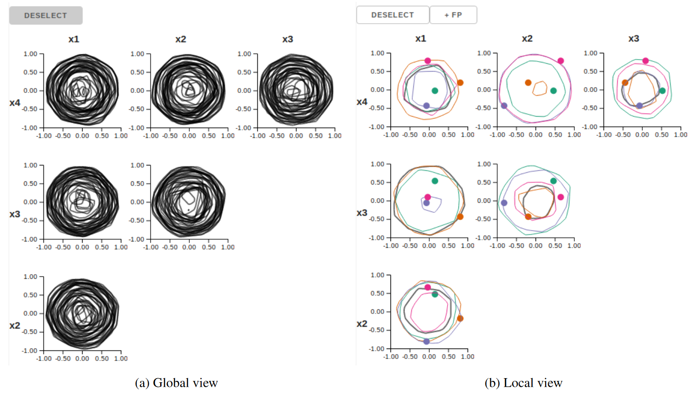

Hypersliceplorer: Interactive Visualization of Shapes in Multiple Dimensions


Venue. CGF (2018)
Abstract. In this paper we present Hypersliceplorer, an algorithm for generating 2D slices of multi-dimensional shapes defined by a simplical mesh. Often, slices are generated by using a parametric form and then constraining parameters to view the slice. In our case, we developed an algorithm to slice a simplical mesh of any number of dimensions with a two-dimensional slice. In order to get a global appreciation of the multi-dimensional object, we show multiple slices by sampling a number of different slicing points and projecting the slices into a single view per dimension pair. These slices are shown in an interactive viewer which can switch between a global view (all slices) and a local view (single slice). We show how this method can be used to study regular polytopes, differences between spaces of polynomials, and multi-objective optimization surfaces.
Link to this page: